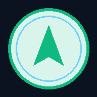
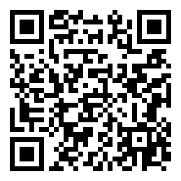

GPS Terrestre
OSM Estradas
A procurar GPS...
🐙
🔊
💡
🪞
🌙
⛶
Velocidade
0
km/h
Rumo
---°
N
Posição (
DD
)
--° --' --"
--° --' --"
Alt:
-- m
Subida:
+0 m
Prec:
±-- m
Odóm:
0.00 km
⬆️
Siga em frente
Destino: --
✕
-- km
Distância
-- min
Tempo Rest.
--:--
Chegada (ETA)
A gravar
·
0.00 km
·
00:00
·
+0m
⏸
⏹ Guardar
🗺️
🧭
🎯
🚗
❌ Tirar Carro
📏
0 m
↩
✕
🔍
Rotas
⏺️
Percursos
📍
Marcar
⭐
Pontos
🧭
Instrumentos
🔍 Pesquisa & Rotas Turn-by-Turn
✕
🚗 Carro
🚴 Bicicleta
🥾 Caminhada
🧭 Linha Reta
Ir
🚗 Carro Estacionado
--
Guiar até lá
❌ Tirar Carro
Instruções da Rota
🥾 Gravador & Percursos GPX
✕
⏺️ Iniciar Gravação
📥 Importar GPX/KML
Perfil de Elevação
✕
⭐ Pontos Guardados & GPX
✕
📍 Guardar Posição Atual
📤 Exportar GPX
Todos
🚗 Carro
🏠 Casa
🏔️ Trilho
⛺ Campismo
⭐ Favoritos
🧭 Bússola, Computador & Ferramentas
✕
N
E
S
W
---°
--
🧭 Ativar Sensor Bússola (iOS/Android)
Odómetro Viagem
0.00 km
Velocidade Máx.
0 km/h
Velocidade Média
0 km/h
Tempo em Movimento
00:00
Altitude / Subida
-- m / +0m
Nascer / Pôr do Sol
--:-- / --:--
🔄 Zerar Viagem
📏 Medir no Mapa
🆘 Partilhar Localização / SOS
Envia coordenadas exatas e link de mapa por WhatsApp, SMS ou área de transferência.
📤 Partilhar Minha Posição
⚙️ Definições & Alertas
Alerta de Limite de Velocidade (km/h, 0 = desligado)
Formato de Coordenadas
Graus Decimais (DD)
Graus, Minutos, Segundos (DMS)
Graus e Minutos Decimais (DDM)
UTM (Métrico)
📋 Copiar Coordenadas Atuais
📍 Guardar Ponto
✕
⭐ Favorito
🚗 Carro
🏠 Casa
🏔️ Trilho
⛺ Campismo
⚠️ Perigo
--
💾 Guardar Ponto
🐙 Painel Ligado ao GitHub
✕
🌐 App Online Permanente (HTTPS)
Repositório:
viegas5113-design/gps-terrestre
Link Telemóvel:
https://viegas5113-design.github.io/gps-terrestre/
📋 Copiar Link
🔗 Abrir
📱 Aponte a Câmara do Telemóvel

Depois de abrir no telemóvel, escolha "Instalar Aplicação" ou "Adicionar ao Ecrã Principal".
☁️ Backup & Sincronização GitHub Gist
Guarde ou restaure os seus Pontos e Percursos na sua conta GitHub (opcional).
⬆️ Guardar Backup
⬇️ Restaurar